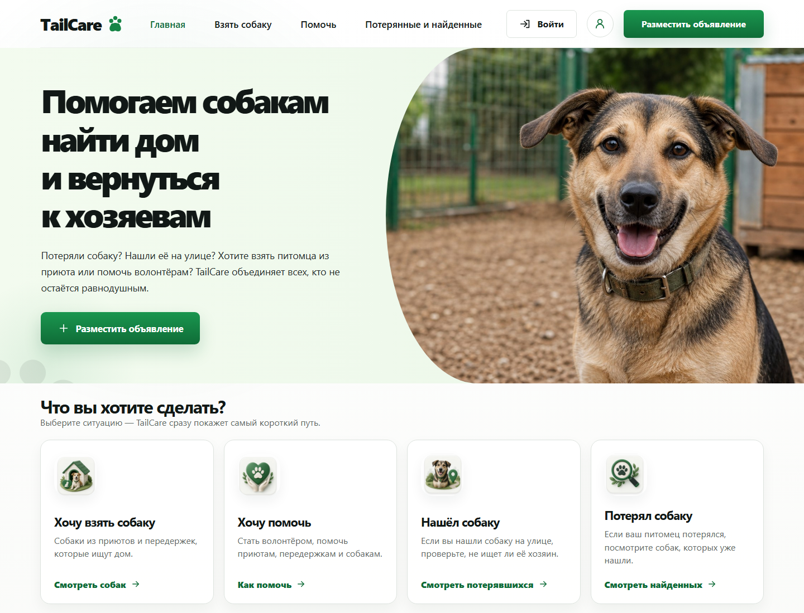
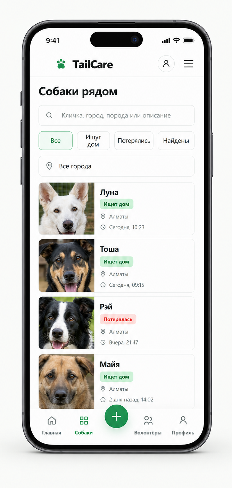
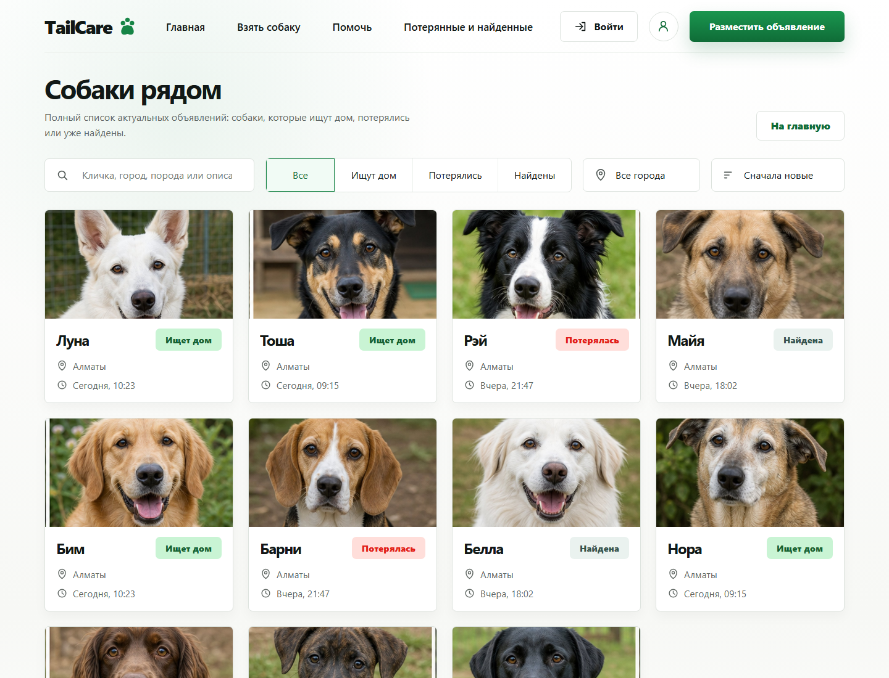
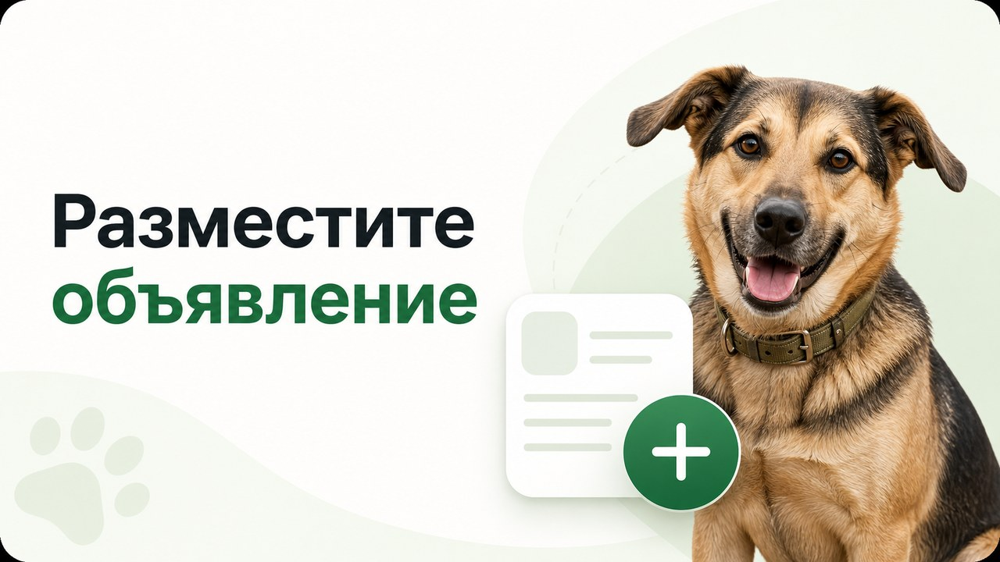
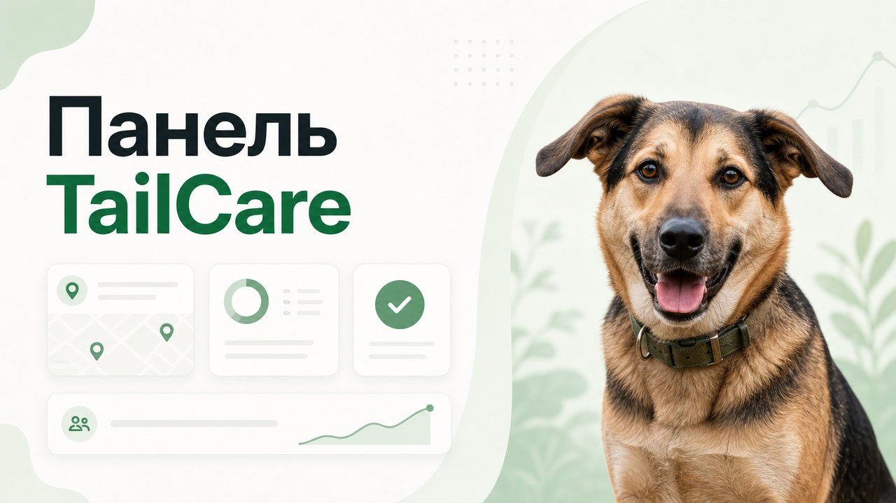
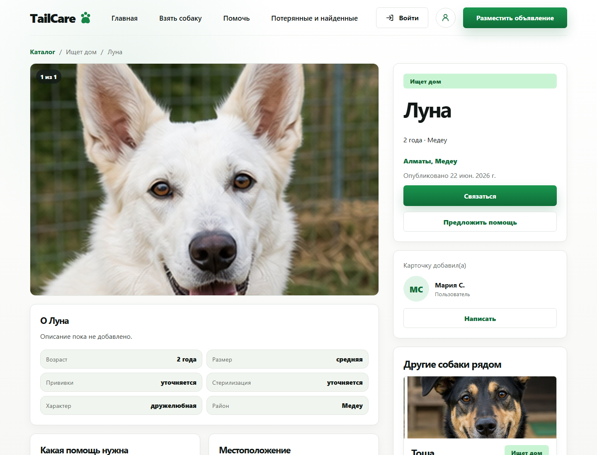

Пользователь
Создаёт объявление, следит за своими карточками и получает уведомления.
Кейс
Платформа помощи животным
от заявки до дома
TailCare объединяет сайт, Telegram-бота и модерацию в единую экосистему для людей, волонтёров и организаций. Путь животного прозрачен: от первой заявки до публикации, помощи и нового дома.

01
Единое пространство для помощи животным: каталог собак, удобные фильтры, карточки с историей и статусами, а также быстрый путь к автору объявления.


02
Чёткие роли и статусы делают процесс предсказуемым для пользователя и прозрачным для команды.
Создаёт объявление, следит за своими карточками и получает уведомления.
Оформляет профиль, помогает животным и работает с организациями.
Проверяет карточки собак и отдельную очередь заявок волонтёров.
Управляет ролями, городами, районами, контентом и статистикой.
Бот собирает данные
Очередь проверки
Комментарий автора
Решение модератора
Карточка доступна всем
Дом найден или статус решён
03
Бот бережно ведёт пользователя по одному вопросу за раз, проверяет ввод и собирает полную карточку для модератора.

Выберите ситуацию — бот проведёт по всем шагам.
Например: «Ласковый Бим ищет дом»
Проверьте данные перед отправкой.
04
В проекте нет декоративной веб-админки: рабочие очереди доступны прямо в Telegram, где команда уже обрабатывает обращения.

Новые заявки появляются в очередях автоматически.

05
FastAPI связывает сайт, бот, роли, карточки и модерацию. Production-контур собирается через Docker Compose и отделяет API, frontend, базу данных и FSM-хранилище.
Публичный каталог
Aiogram 3
REST и бизнес-логика
Данные и статусы
FSM бота
Фото и вложения
От идеи до работающей экосистемы